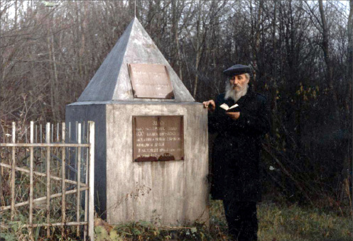

Exploitation
It is ten years since the passing of the Chassid, R’ Zalman Levin a”h of Kfar Chabad. He walked among us, but he belonged to the generation of giants, Chassidim who lived lives of mesirus nefesh. In a series of meetings, he recounted the story of his childhood in a Chassidishe home in the Soviet Uni

As mentioned previously, I arrived in Leningrad where I hoped to remain until I turned 16, when I would no longer be of the age of compulsory education and could acquire a legal passport as a resident of the city. This would allow me to sign up for work in various places and would also solve the problem of a place to sleep, so I would no longer have to hide out in fear in the homes of different Chassidim.
Next to the shul where I spent most of my time lived a Jew who ran a bakery. He was appointed by the government to supply bread to all the stores so people would have what to eat. He liked me and had me make the bread deliveries to the stores. He gave me a wagon and that is what I used to cart around the bread and distribute it according to a list of addresses he gave me.
This could have gone on a for a long time except that one day, R’ Yaakov Yosef Raskin, in whose house I had slept, told me that he had an excellent idea for me for lodgings and employment. It was something new he had found in a suburb near Leningrad.
Next to the gentile cemetery lived an elderly couple, both in their early seventies. They needed a boy to live in their house, to help them out and bring whatever they needed. They were willing to adopt him and would provide his room and board.
The old man’s name was R’ Avrohom, but everyone called him R’ Avrohom the Malach (Angel) since he had a white beard that made him look angelic, but he also acted like an angel. He would run from place to place in search of another mitzva, where he could do a Jew a favor, where there might be orphans or a widow or a funeral, and searched for ways to alleviate their plight. He tried to help everyone, not taking his age and health into consideration.
R’ Avrohom the Malach had a golden tongue. He knew how to speak to the authorities and convince them not to abandon unfortunate and helpless Jews. He made it his business to ensure that the social service offices did not neglect the needy and took care of whoever was under their jurisdiction. Thanks to this talent of his, he made connections with government figures and they acceded to all his requests.
I accepted the offer. I would sleep with the old couple and help them by day and by night too. Sometimes they needed a cup of water or tea in the middle of the night and I was their faithful helper.
I was not surprised to discover a mikva in a room of their house, after all the mikvaos were shut down in Leningrad. The mikva was one of my jobs. During the day I prepared the logs, heated the mikva, changed the water, and made sure the mikva was clean. Some people noticed occasional visitors to the house and when they asked questions, they were told it was a sort of bathtub to bathe in.
Very early in the morning, I would go to a nearby forest and cut trees, chop them into small logs and then load them onto the wagon which was pulled by the loyal horse that was always with me. I would bring home the wood and put them in a special oven made for them and light them. Then the pipes which brought the warm water to the mikva heated up. I had a good feeling and tremendous satisfaction from this chore; I felt I was doing holy work.
Although my abode was somewhat distant from the Chassidic community, every night I would go to R’ Yaakov Yosef Raskin’s house to learn or farbreng. I would learn with his sons, R’ Sholom Ber and R’ Mendel (R’ Dovid was in Kutais, Georgia, where he was secretly learning). I would also go to the home of R’ Yitzchok Raskin and learn with him. Boruch Hashem, it went smoothly and I was never caught, and my routine was one of work and learning.
***
I was 16, and by law I had to have ID papers. I could obtain these papers only where my parents lived, in Nevel. It was very hard and dangerous to live in a city without papers but, as I mentioned previously, I could not return to Nevel.
Because of my steady work for R’ Avrohom the Malach, he arranged for the authorities to issue ID papers to me as a regular worker in that area, attesting that I was adopted by his family and not a criminal, and that I made good use of my time and studied a profession (at the time, I was studying draftsmanship in a nearby industrial concern).
I should point out that it was no simple matter for me to get those papers. I had to bring various documents, including an affidavit from my father that he was abdicating all parental rights and I was now a free and independent person with my own identity. The name “Levin” was not my last name anymore either. My father had to write me this document, without which I could not receive my ID papers.
For my father, it entailed mesirus nefesh to write this, since he was afraid that the moment I received my papers, I would really become independent in every respect and would forget my origins and would assimilate among the gentiles. He was terribly afraid that I would turn my back on Judaism and become a goy.
He expressed his fears in letters he wrote me afterward. He would ask me, “What will be with Shabbos and Yomim Tovim? How can you work without working on Shabbos?” and other questions like that.
After receiving my passport I was happy, since I could start working legally without fear of being arrested and questioned. I was also free to walk the streets without fear lest someone stop me and ask me if I was a resident. I was happy and relieved. I could finally ride the train without any concerns; at that time, this was a big thing. Everyone in my family was happy for me. I was working and supporting myself and learning too, and also helping my parents.
That was a very good period of time in my life for me. I was fully occupied and felt enormous satisfaction and joy. In general, I was accustomed to miracles all along. When I start thinking about it, I literally tremble and ask myself how I went through all that. How did I overcome all the obstacles of that time? How did I manage to work as well as to run and learn in the evenings and get my papers and even support my parents?
***
This older couple had a son who worked in a shoe factory not far from their house. One day, the managers of the factor needed a delivery man. The son suggested me for the job and I agreed.
This was a time when there were no trucks or mechanized three-wheeled carts that any private enterprise owned. They mostly used horses harnessed to wagons, which they used to transport merchandise to warehouses and stores. The son had two horses. With one horse he worked and the other horse he assigned to me and I helped him with the work. The factory paid for all the expenses of maintaining the animals and wagon.
He had a goy help us too, but I was the one in charge of the horses and wagons. I fed and watered them and placed them in their stable at the end of the day.
Throughout the day, I distributed shoes to the addresses they gave me, warehouses and stores, and I made good money. It was enough for my needs plus extra to send to my family in Nevel. Every now and then I would send home packages of food that contained sugar, flour, oil, margarine, and other items. I knew that my family lived in dire poverty and barely had what to eat.
***
Then someone informed on the couple’s son and said he was exploiting me, meaning that he was profiting on my account, that I was working for him and getting a minimum wage while he was making a lot of money using cheap labor. This greatly offended the communists, of course.
They took me for interrogation. I said that I did not know how much I earned and exactly how much he paid me; I did not understand money matters and I only knew that these Jews helped me and took care of me, giving me food and board, and I helped them in return. I said I did not know precisely what this exploitation was about; I only knew that we benefited from one another and none of us had complaints.
The interrogation was exhausting and painful. I didn’t know precisely where they were going with their line of questions. They asked me about all kinds of nonsense and I was afraid to sign the paper they wanted me to sign, since I didn’t know if it would incriminate me or not. I sat there at the interrogations and cried. I finally went home without signing, even though they threatened that if I didn’t sign and admit to all the accusations and tell them the truth, they would cause me big problems and put me in jail.
I did not understand what they wanted from me and I wasn’t just pretending, since I was convinced that the old couple was innocent and had done no harm to anyone; on the contrary, they helped whomever they could.
I felt at a loss, but continued to work for them until the war broke out and the cursed Germans began fighting Russia.
Not far from us were large warehouses of food that supported many residents. The Germans began bombing these food depots, one by one. Within a relatively short time, they began conquering Leningrad and morale was very low. The situation continued to deteriorate. The shoe factory was closed, since the employees did not show up to work because they had no food to eat. They were also afraid lest they be struck by bombs on their way to work.
Then one evening, they stole one of the horses belonging to the couple. Apparently, they wanted to eat it. A few days later, the other horse died since there was no food for it. We found it dead in the stable. These horses had been a source of income and now they were gone.
Menachem Ziegelboim. "Exploitation." Beis Moshiach, no. 861 (December 19, 2012).